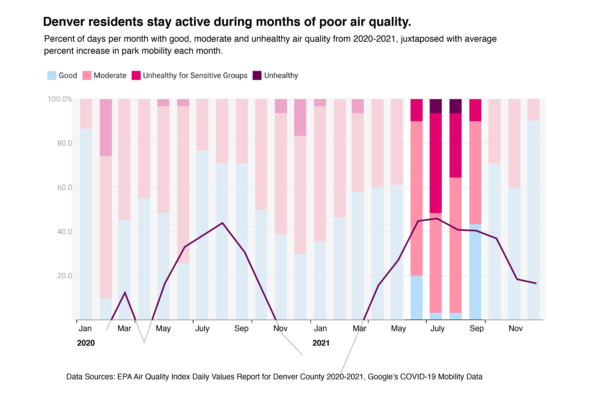

When my life becomes chaotic or overwhelming, I have found refuge in lacing up my blue-green Keen hiking boots, finding a remote trail–preferably made of dirt–and putting some miles between me and my problems.
It’s a meditative experience – the sound of earth crunching below my feet, the pumping of my heart, the methodical breaths in and out. In and out.
Throughout the pandemic, as the walls have started to close in and the unknown and uncontrollable looms greater in our minds, the outdoors have been a sanctuary for millions. In fact, last year many Denver residents like myself were searching for places to get outdoors.
The Google search term “park near me” broke the area-record for popularity in July of 2021.
Anecdotally, I knew many people who had recently gotten into hiking or walking and had more time to do so while on lockdown. I wanted to know which Colorado counties saw increases in park traffic.
Using Google’s COVID-19 Mobility Data, I calculated the average difference between 2020 park traffic and 2021. It’s difficult to compare, as the park usage is so dependent on weather, holidays, and work patterns. We also don’t have a good pre-pandemic reading. However, by averaging the change in park usage by day of the week and season, I was able to see some differences.
Last year Denver saw an increase in traffic to parks during every season, unlike many of the surrounding counties which experienced decreased activity during the winter and summer months.
Park traffic in Denver County increased every season last year.
Change in average park mobility from 2020 to 2021 by county. Data source: Google's COVID-19 Mobility Data

Denver County's park traffic grew not just on the weekends but throughout the work week as well. A representative from Denver's Parks and Recreation department says the increase could be due to the fact that many playgrounds, tennis and basketball courts were closed during the 2020 lockdown and group gatherings were limited to 10 people.
A number of factors can contribute to fluctuations in park usage throughout the year. Weather is an obvious one. Personally, air quality played a large role in my decisions whether or not to take my child outside. For weeks on end I would receive air quality alerts from the EPA, stating Ozone or particulate matter was at an 'unhealthy' level. Last year, due to wildfire smoke, Denver ranked number one on a list of international cities with the most air pollution.
According to the EPA's air quality index, Denver experienced more days of moderate and unhealthy air quality last year than during 2020.
Despite the high levels of pollution, Denver residents remained active last summer and fall.
